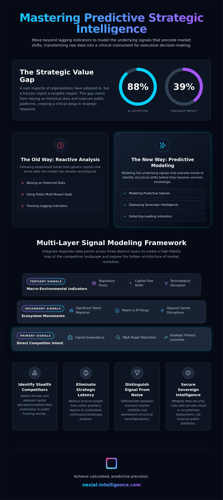

As of June 2026, 88% of organizations have integrated AI into their operations, yet only 39% report a tangible impact on their bottom line. This massive value gap exists because most leaders are still tracking market shifts using historical data and public SaaS platforms that compromise strategic data security. You recognize the strategic latency inherent in generic reports that arrive only after a market has already reconfigured. True competitive advantage doesn't come from following established trends - it comes from modeling the underlying signals that precede them.
This article outlines the methodologies required to master predictive strategic intelligence and reduce time-to-insight for M&A and sector mapping. We detail how to build a secure, sovereign intelligence infrastructure that transforms raw data into a clinical instrument for executive decision-making, and how to navigate a fragmented regulatory landscape - including new AI transparency laws in California and the EU - by implementing a systematic framework for signal detection. This is the blueprint for moving beyond information overload toward a state of calculated, predictive precision.
Key Takeaways
- Distinguish between transient volatility and permanent structural reconfigurations to eliminate strategic latency in high-stakes environments.
- Implement a multi-layer signal modeling framework that moves beyond surface-level metrics for more precise tracking of market shifts.
- Identify stealth competitors and adjacent sector disruptions before they materialize through public funding rounds or common market knowledge.
- Reduce time-to-insight by transitioning from static quarterly reports to automated, continuous landscape analysis and M&A monitoring.
- Secure your strategic intelligence through Private Cloud or On-Premises deployment to mitigate the risks inherent in public multi-tenant platforms.
Defining Market Shifts: Structural Reconfiguration vs. Transient Trends
Market volatility is often mistaken for strategic evolution. Most organizations react to cyclical fluctuations, wasting resources on transient trends that lack long-term viability. Structural reconfiguration is different: it represents a permanent pivot in how value is created, captured, and distributed within an ecosystem. Effectively tracking market shifts requires a clinical distinction between these two states.
Traditional market research fails because it relies on lagging indicators and consensus-based reporting. By the time a shift appears in a generic industry report, the window for alpha has already closed. Success in high-stakes environments depends on identifying three core drivers: technological disruption, regulatory pivots, and capital flow. In 2026, the regulatory landscape is particularly volatile. New comprehensive data privacy laws in Oklahoma, Alabama, and Vermont have created a fragmented environment that mandates sophisticated horizon-scanning methodologies. These aren't just compliance hurdles - they are signals of deeper market reconfigurations. When capital flows move in tandem with these regulatory pivots, the result is a structural shift that renders previous business models obsolete.
The Taxonomy of a Structural Shift
Structural shifts manifest in three distinct patterns. Vertical shifts alter specific industry value chains, often through disintermediation or the entry of non-traditional players. Horizontal shifts involve cross-industry disruptions, such as the profound impact of agentic AI on the insurance and legal sectors. Regulatory catalysts are perhaps the most potent: the Illinois AI in Employment Law, effective January 1, 2026, has fundamentally changed the risk profile for HR technology providers. These shifts create stealth opportunities for those capable of detecting the signal before it reaches the broader market.
The Cost of Strategic Latency
Strategic latency is the temporal gap between the emergence of a signal and the formation of market consensus. In 2026, "fast following" is no longer a viable strategy for AI-native markets; the speed of execution has compressed significantly. A 90-day lead in M&A target identification can be the difference between a successful acquisition and an overpriced bidding war. Reducing this latency requires moving beyond public SaaS tools toward private, multi-layer signal modeling. You can't achieve superior outcomes using the same data as your competitors. Precision requires sovereign intelligence and a commitment to detecting structural changes before they become common knowledge.
Multi-Layer Signal Modeling: The New Standard for Tracking Market Shifts
Surface-level metrics like web traffic or social sentiment are insufficient for high-stakes environments. They're vanity indicators that lack the depth required for tracking market shifts before they manifest as public knowledge. Sophisticated intelligence requires a transition to multi-layer modeling. This approach treats the market as a complex system where disparate data points interact to reveal structural reconfigurations. By layering technical, financial, and organizational data, you create a high-fidelity map of the competitive landscape. It's about moving from what is happening to what is being prepared. Real intelligence doesn't just describe the current state; it models the forces that will define the next one.
Anatomy of a Strategic Signal
Effective modeling categorizes data into three distinct layers. Primary signals include direct, high-intent actions by competitors - capital expenditure on specific infrastructure, M&A watchlists, and official product launches provide the clearest evidence of a strategic pivot. Secondary signals track ecosystem movements; significant talent migration from established incumbents to emerging startups often precedes a shift in market dominance. Tertiary signals involve macro-environmental and stealth indicators - a robust strategic foresight framework helps categorize these, such as patent filings that hint at future R&D directions. These layers, when integrated, expose the hidden architecture of market evolution.

Filtering Signal from Noise
Information overload is the primary enemy of strategic clarity. AI-native processing identifies high-probability market pivots by detecting anomalies across integrated data sets, filtering the noise of daily volatility to focus on structural signals. Sector mapping then visualizes signal density, highlighting geographic or technological clusters where disruption is imminent. This focused approach ensures that analysts don't get lost in the noise. Multi-layer signal modeling is, at its core, the integration of disparate data points to predict structural market changes. Leaders who require this level of precision can initiate a 2-4 Week Strategic Intelligence Pilot to pressure-test their current assumptions, ensuring that every data point serves a clinical purpose in the broader strategic narrative.
Identifying Stealth Competitors and Adjacent Sector Disruptions
The greatest threat to your market position is rarely the competitor you've tracked for a decade - it's the entity you haven't seen yet. This "blindspot" problem occurs when strategic intelligence focuses too narrowly on established peers, ignoring the stealth ventures and cross-sector players currently reconfiguring the value chain. Effective tracking requires looking beyond the obvious. You must monitor the periphery, where innovation is quiet, intentional, and undocumented by traditional media. Identifying these players before they reach a public Series B funding round provides a critical window for defensive maneuvering or early-stage acquisition.
Signal-driven deal origination is the antidote to strategic blindness. Instead of waiting for investment banks to bring you opportunities, you should use automated landscape analysis to detect movement in real time. This involves monitoring M&A watchlists for patterns that suggest a competitor is quietly building a new capability in an adjacent space. By the time a deal is announced, the strategic advantage has often been priced out. Proactive detection ensures you're the one defining the market's direction, not reacting to it.
Stealth Startup Detection Framework
Detecting stealth-mode entities requires a systematic approach to non-obvious data. Start by tracking "talent clusters." When high-level engineering or strategic talent migrates from established tech giants to a common, unnamed venture, it's a primary signal of a structural shift. Analyze IP filings and domain registrations for specific technical keywords that align with your sector's future. This level of signal modeling allows you to map the landscape before public capital flows confirm the trend. It's about finding the breadcrumbs before the trail becomes a highway.
Adjacent Sector Mapping
Disruption often originates in "convergence zones" where two previously distinct industries merge. Consider the intersection of fintech and automotive telematics: as vehicles become transaction-capable platforms, the traditional boundaries between insurance, banking, and automotive manufacturing dissolve. Identifying these spillover effects early is essential for tracking market shifts that could erode your core business. You can use Sector Mapping & Landscape Analysis to visualize these intersections and build an automated M&A watchlist and monitoring system. This ensures that cross-sector signals are integrated into your continuous intelligence loop, providing a comprehensive view of potential disruptions before they materialize as common knowledge.
Operationalizing Strategic Foresight: From Detection to Execution
Detection is merely a passive state. Strategic foresight only delivers value when it's operationalized into a clinical execution framework. Most firms fail because they treat intelligence as a quarterly event rather than a continuous operational loop. By the time a static report is circulated, the market has already moved. Real-world efficacy requires a direct integration of intelligence outputs into the corporate development pipeline, ensuring that capital allocation is based on predictive signal confidence intervals rather than historical performance or gut instinct.
Reducing time-to-insight is the primary objective of any sophisticated intelligence architecture. Automated landscape analysis allows for the rapid identification of structural pivots, moving from raw signal detection to actionable strategy in days, not months. This speed is essential for tracking market shifts in an environment where the adoption-to-value gap is widening.
The 4-Step Intelligence Loop
- Step 1 - Sector Mapping & Landscape Analysis: establish the baseline. Define the existing ecosystem and identify the known vectors of competition.
- Step 2 - Multi-Layer Signal Modeling: identify emerging anomalies. Filter the noise to find the structural pivots.
- Step 3 - M&A Watchlist & Monitoring: target specific tracking. Move from general market awareness to tactical observation of high-probability targets.
- Step 4 - Strategic Pilot: validate the intelligence. Run a high-intensity sprint to confirm the validity of the signals before committing significant capital.
Mitigating Cognitive Bias in Strategy
Incumbents often suffer from institutional blindness. They ignore signals that threaten their core business or contradict their established worldview. Clinical, data-driven modeling removes this bias by presenting objective evidence of market reconfigurations. Automated sector landscapes can reduce strategic latency by up to 40% compared to manual research. This objective approach ensures that decision-making remains focused on the market's actual trajectory rather than internal assumptions, allowing leaders to move with a degree of confidence that manual, workshop-heavy processes simply cannot provide.
Sovereign Intelligence: Secure Architecture for Market Tracking
Public multi-tenant SaaS platforms represent a significant vulnerability for enterprise strategy. When you're tracking market shifts that involve sensitive M&A targets or confidential sector mapping, the underlying data architecture must be sovereign. Public platforms often aggregate user data or use it for model training, creating unacceptable risks for high-stakes environments. Strategic intelligence is only as valuable as it is secure. In an era of AI-driven espionage and a fragmented regulatory landscape, maintaining absolute control over your intelligence layer is a prerequisite for competitive advantage. Security is not optional - it's the foundation of strategic autonomy.
Achieving sovereign data control requires a move away from shared infrastructure. As new privacy laws in Oklahoma, Alabama, and Vermont take effect in 2026, the legal necessity for data isolation has never been higher. Enterprise teams must ensure their intelligence tools don't become the source of their own disruption. Nexial Intelligence secures the strategic layer by providing dedicated environments that prevent data leakage while maintaining the high-speed processing required for predictive modeling, ensuring that your most sensitive insights remain exclusively yours.
Private Cloud vs. Public SaaS in Intelligence
Multi-tenant environments are prone to cross-contamination and unauthorized access. For organizations managing M&A watchlists, the risk of data exposure on public servers is a critical failure point. Private Cloud / On-Premises deployment ensures that your strategic data remains within your sovereign perimeter, supporting rigorous compliance with internal corporate data-security protocols. Air-gapped or on-premises solutions provide the ultimate defense against external signal interception. It's the difference between using a public utility and owning the infrastructure.
Implementing a Strategic Intelligence Pilot
Validation must occur within a secure environment. A 2-4 week pilot allows enterprise teams to evaluate the analytical depth of multi-layer signal modeling without compromising data integrity. This sprint tests signal accuracy against real-world shifts and establishes a baseline for long-term sector monitoring - a clinical approach to upgrading your intelligence infrastructure. By the end of the pilot, you'll have a clear methodology for tracking market shifts at scale.
Mastering the Intelligence Layer
The transition from reactive monitoring to predictive modeling is the only way to maintain a competitive lead. You've identified the necessity of distinguishing structural reconfigurations from transient noise and the value of detecting stealth competitors before they reach public awareness. Tracking market shifts with clinical precision requires more than generic data - it requires a systematic, multi-layer approach that integrates disparate signals into a unified strategic map.
Secure your future by deploying these methodologies on a sovereign infrastructure. Our Private Cloud and On-Premises deployment options ensure your M&A watchlists and proprietary sector mapping remain protected from the risks of public SaaS. You're now equipped with the frameworks to move beyond information overload toward actionable, high-probability insights - the difference between following the market and defining it. Request a 2-4 Week Strategic Intelligence Pilot to pressure-test these advanced signal modeling technologies in a secure environment.